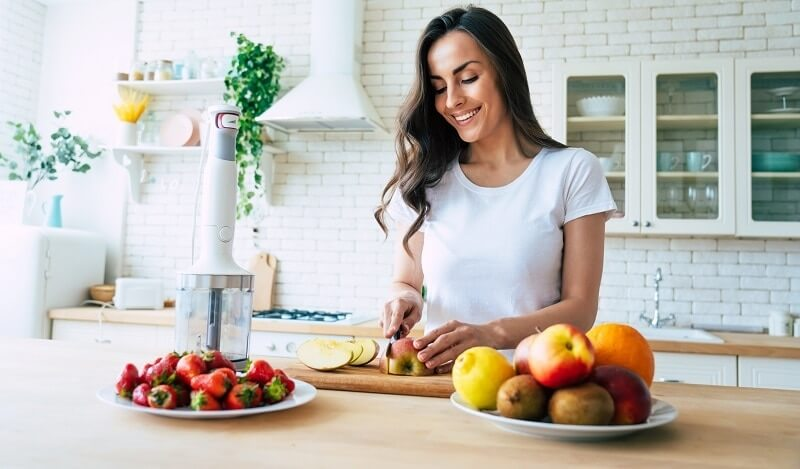

12 mois de régime
J'ai perdu 40 kilos en 1 an !
Comment ?
Découvrez le sur ce blog !
J'ai perdu 40 kilos en 1 an !
Comment ?
Découvrez le sur ce blog !

En décembre 2022, comme chaque année, j’ai pris la résolution de perdre du poids. Mais cette fois, j’ai voulu faire les choses différemment : j’ai acheté un vélo d’appartement, en me disant que ça me motiverait à en faire, histoire de ne pas l’avoir acheté pour rien.
Pendant un mois, j’ai pédalé régulièrement… mais sans rien changer à mon alimentation. Résultat : zéro kilo perdu. Grosse désillusion. Faire du sport ne suffit pas : il ne représente qu’environ 30 % d’un régime. J’ai alors décidé de me lancer un défi : pendant un mois, je bannis le gras et le sucre, je mange mieux et moins, et on voit ce que ça donne.
Un mois plus tard, 6 kg en moins. J’étais enfin repassé sous la barre des 100 kg. C’est à ce moment-là que j’ai compris : ça fonctionne ! J’avais trouvé ma motivation. J’ai donc continué !
Au plus haut de mon poids, j’atteignais 110 kg pour 1m70. Je voulais maigrir, mais je manquais de volonté. Par souci d’économie, j’ai commencé à réduire certaines mauvaises habitudes : moins de Coca, moins de fast-food (jusqu'à 3 fois par semaine à une époque), et moins de gâteaux. Rien que ça m’a fait perdre 6 kg sans effort. Je me suis dit : "Ouah, même pas besoin de faire du sport !".
Mais très vite, la stagnation. Sans activité physique, je ne perdais plus rien. Et ma vie très sédentaire n’aidait pas. Plusieurs années plus tard, fin 2022, je pesais toujours 104 kg.
Après un an de régime, en janvier 2024, j’étais descendu à 68 kg. Aujourd’hui, en février 2025, mon poids fluctue entre 67 et 69 kg. J’ai réussi à ne pas reprendre mes kilos perdus… mais nous y reviendrons.
Avant mon régime, monter les escaliers était un calvaire, mes genoux souffraient à chaque pas. La moindre activité physique me faisait transpirer à grosses gouttes. Même passer l’aspirateur me donnait des courbatures le lendemain… c’était catastrophique.
Quand j’ai commencé le vélo d’appartement, c’était une vraie épreuve. Même au niveau de résistance le plus bas, j’étais en souffrance. Mais je n’ai pas abandonné. De semaine en semaine, j’ai vu mes progrès. Le vélo devenait plus facile, et après plusieurs mois, j’ai décidé de me mettre à la course à pied.
Avec la perte de poids, tout a changé :
Niveau santé, j’ai l’impression d’avoir rajeuni de 15 ans !

L'alimentation représente les deux tiers d’un régime. J’ai d’abord réduit mes portions de presque moitié. Ce n’était pas simple, car on associe souvent un bon repas à une sensation de satiété extrême. Un petit changement m'a beaucoup aidé : utiliser une assiette plus petite ! Ça peut sembler anodin, mais ça trompe le cerveau et évite de trop remplir son assiette.
Ensuite, j’ai travaillé sur l'équilibre des repas. N’aimant pas beaucoup les légumes au départ, j’ai trouvé des alternatives : galettes, purées, mélanges avec des féculents… Petit à petit, je me suis habitué à leur goût. J’ai aussi remplacé certains aliments par des versions plus saines : pâtes et riz complets, quinoa, semoule, volaille au lieu des viandes grasses. Fini les viennoiseries et les biscuits ultra-transformés : place aux fruits et aux snacks plus naturels. Et surtout, plus rien après le repas du soir !
Résister aux tentations est difficile. On se dit "juste une fois...", puis une fois devient une habitude. Pour éviter ça, j'avais une astuce simple : boire un verre d’eau citronnée quand j’avais une fringale.
Un autre piège : le grignotage. Avant, je prenais systématiquement quelque chose en passant devant un placard. J’ai appris à m’en tenir à quatre repas par jour : matin, midi, goûter, soir. J’ai aussi arrêté de me resservir et préparé des quantités adaptées.
Cela peut sembler strict, mais je ne me suis jamais totalement privé. La frustration mène souvent à l’abandon. Je m’accordais un petit plaisir le week-end, comme une viennoiserie. Résultat : je l’appréciais d’autant plus !
Au début, j’ai cru qu'il fallait juste manger moins pour maigrir. Grosse erreur ! En réduisant trop l’apport alimentaire, on finit épuisé, et pire : le corps stocke au lieu de brûler.
J’ai donc remplacé mes anciens aliments par des alternatives plus équilibrées :
Pour m’aider à choisir mes aliments, j’ai utilisé le Nutri-Score et l’application Yuka, qui permettent d’évaluer leur qualité nutritionnelle en un coup d’œil.
Après plusieurs essais, voici quelques plats équilibrés que j’adore :
Le principe d’un régime, c’est d’éliminer plus de calories qu’on en ingère. Pour ça, le sport, combiné à une alimentation saine, aide énormément.
Au début, j’ai commencé doucement avec un vélo d’appartement : deux séances de 30 minutes par semaine pour réveiller mon corps, qui n’était plus du tout habitué à l’effort. En prenant confiance, je suis passé à trois séances, puis à des sessions d’une heure. Ça peut sembler long, mais devant une série, ça passe vite ! Une fois à l’aise, j’ai augmenté progressivement la résistance du vélo jusqu’à 8/10 en constant. J’ai aussi ajouté des périodes de fractionné, alternant accélérations et allure normale.
Mais vers 85 kg, je sentais que mon corps s’habituait et je transpirais moins. J’ai donc décidé de me mettre à la course à pied. Pas de tapis de course : direction l’extérieur ! Au début, c’était éprouvant, mais le vélo m’avait bien préparé. J’ai commencé avec deux séances de 30 minutes par semaine, incluant des périodes de marche. Progressivement, je suis monté à trois séances, en courant de plus en plus longtemps, sans m’arrêter. J’étais heureux (et lessivé) quand j’ai réussi mon premier 10 km sans pause!
Aujourd’hui, je cours mes 10 km sans difficulté, et je cherche à améliorer mon temps à chaque sortie.

Quand on veut perdre du poids, les deux sont complémentaires et jouent un rôle clé dans une transformation physique réussie.
Le cardio est l'allié principal pour brûler un maximum de calories. Il booste le métabolisme, améliore l’endurance et renforce le cœur. Pour moi, il a été essentiel dans ma perte de poids : vélo d’appartement au début, puis course à pied en extérieur.
La musculation est un atout puissant pour la perte de poids, elle n'est pas réservé à ceux qui veulent "prendre du muscle". En développant un peu de masse musculaire, le corps brûle plus de calories au repos, ce qui facilite la stabilisation du poids sur le long terme.
Au départ, je faisais surtout du cardio, mais en atteignant un certain palier, j’ai compris qu’il me fallait renforcer mes muscles pour éviter la fonte musculaire et continuer à progresser. J’ai intégré quelques exercices de renforcement sans chercher à "gonfler", juste à être plus tonique et performant.
Aujourd’hui, je privilégie toujours le cardio (car j’aime courir), mais j’ajoute un peu de musculation pour éviter la stagnation et améliorer mes performances. Si je devais donner un conseil, ce serait de ne pas négliger la musculation, même quand on veut juste perdre du poids.
Tout le monde n’a pas la même condition physique au départ, et c’est normal ! L’important, c’est d’avancer à son rythme et de choisir une activité qui convient. Ces points sont importants :
La clé d’un régime réussi, c’est d’avoir un objectif précis. Plutôt que de viser un chiffre final dès le début, je me suis fixé des paliers réalistes : perdre 5 kg, puis 10, puis 15, etc. Cela permet de rester motivé et d’éviter la frustration.
Un régime ne doit pas être une contrainte temporaire mais un changement de mode de vie. Pour éviter l’effet yo-yo, j’ai transformé certaines résolutions en habitudes quotidiennes :
Se priver complètement peut être contre-productif. J’ai adopté la règle du 80/20 : 80 % de repas sains et 20 % de petits plaisirs. Je m’autorisais un écart par semaine (une pâtisserie, un bon repas), ce qui m’aidait à tenir sur la durée sans craquer.
J’ai tenu un journal de bord de mon poids et de mes repas. Voir mes progrès noirs sur blanc m’a énormément motivé. J’ai aussi pris des photos avant/après, car le poids sur la balance ne raconte pas toujours toute l’histoire (perte de gras vs prise de muscle).
J’ai utilisé Yuka pour mieux choisir mes aliments et MyFitnessPal pour suivre mes apports caloriques au début, afin de mieux comprendre mes besoins. Avec le temps, j’ai appris à m’écouter sans avoir besoin de tout compter.
Manger sainement tout en gardant une vie sociale est un vrai défi. J’ai appris à faire de bons choix au restaurant (poisson grillé, légumes, éviter les plats trop gras) et à préparer mes propres snacks pour les apéros (hummus, légumes croquants, fruits secs).
Ma plus grande motivation a été ma propre progression. Voir mon corps changer, me sentir mieux dans ma peau, avoir plus d’énergie… Chaque petit progrès m’a donné envie de continuer.
Perdre du poids, ce n’est pas seulement une question d’alimentation et de sport, c’est aussi un combat mental. Sans une bonne approche psychologique, il est facile de se décourager et d’abandonner en cours de route. Voici ce qui m’a aidé à garder le cap et rester motivé tout au long de mon parcours.
L’une des premières erreurs que j’ai faites, c’était de vouloir perdre du poids trop vite. Mais j’ai compris qu’une transformation durable se fait par étapes. Plutôt que de me focaliser sur le chiffre final, je me fixais des petits objectifs :
Chaque objectif atteint était une victoire qui me donnait envie de continuer.
Pourquoi voulais-je perdre du poids ? Pour ma santé, mon apparence, mon bien-être ? Me rappeler pourquoi j’avais commencé m’a permis de ne pas lâcher. J’ai aussi utilisé des photos avant/après, un journal de progression, et même des vêtements trop petits que je voulais remettre un jour.
Il y a des jours où la motivation est au plus bas. Plutôt que de culpabiliser, j’ai appris à accepter ces moments et à ne pas tout remettre en question au moindre écart. Ce qui compte, ce n’est pas d’être parfait, mais de rester constant sur le long terme.
Les résultats ne viennent pas du jour au lendemain. Se comparer aux autres est inutile, car chacun évolue à son propre rythme. Ce qui m’a aidé, c’est de me comparer à moi-même, en regardant le chemin parcouru plutôt que ce qu’il restait à faire.
J’ai appris à célébrer mes progrès sans tomber dans la nourriture plaisir en excès. Une nouvelle tenue, une sortie sympa, un massage… Se récompenser autrement permet de garder la motivation sans annuler ses efforts.
Le soutien est primordial ! J’ai eu la chance d’avoir des proches qui m’encourageaient, mais j’ai aussi trouvé de la motivation via des témoignages en ligne, des groupes de soutien, et des applications de suivi qui me donnaient un sentiment de progression.
S’imaginer dans quelques mois, plus en forme et plus à l’aise dans son corps, est une technique puissante pour garder la motivation. À chaque séance de sport ou chaque repas équilibré, je savais que je faisais un pas de plus vers la meilleure version de moi-même.
Perdre du poids, c’est une étape, mais le plus dur commence souvent après : ne pas tout reprendre. Beaucoup de personnes connaissent l'effet yoyo, cette reprise de poids progressive après un régime strict. Voici comment j’ai abordé cette nouvelle phase et ce qui m’a permis de stabiliser mon poids tout en conservant mes nouvelles habitudes.
Après plusieurs mois de discipline stricte, j’ai dû apprendre à relâcher un peu sans tout gâcher. Mon objectif était de ne plus être "au régime", mais d’adopter une alimentation saine de manière durable.
Quand on perd beaucoup de poids, l'entourage réagit différemment : compliments, interrogations, parfois même scepticisme. Il a fallu que je garde le cap et que je reste concentré sur mon propre ressenti plutôt que sur l'opinion des autres.
Une fois mon objectif atteint, il aurait été facile de ralentir le sport, mais j’ai choisi de continuer à bouger pour ne pas repartir en arrière.
Une fois arrivé à mon poids de forme, j’ai compris qu’il me fallait de nouveaux objectifs pour rester motivé :
La perte de poids n’est pas une simple transformation physique, c’est aussi une évolution mentale. Aujourd’hui, je ne suis plus en "régime", je vis simplement d’une manière plus saine. Je continue à apprendre, à ajuster, et surtout, à profiter de ce nouveau mode de vie sans regret.